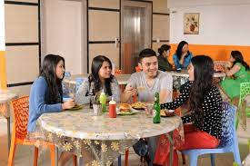
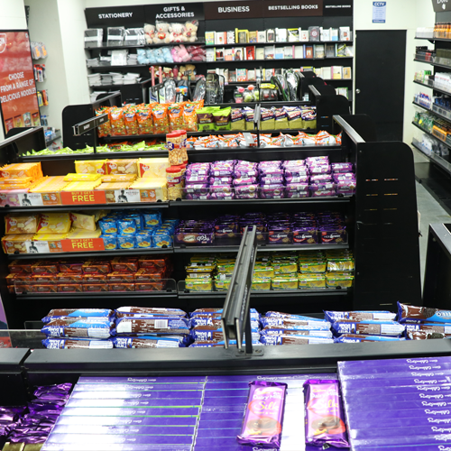
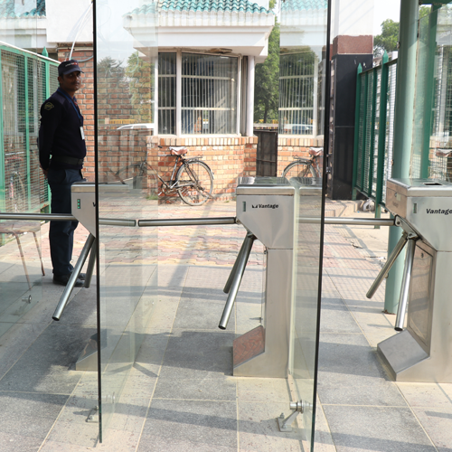
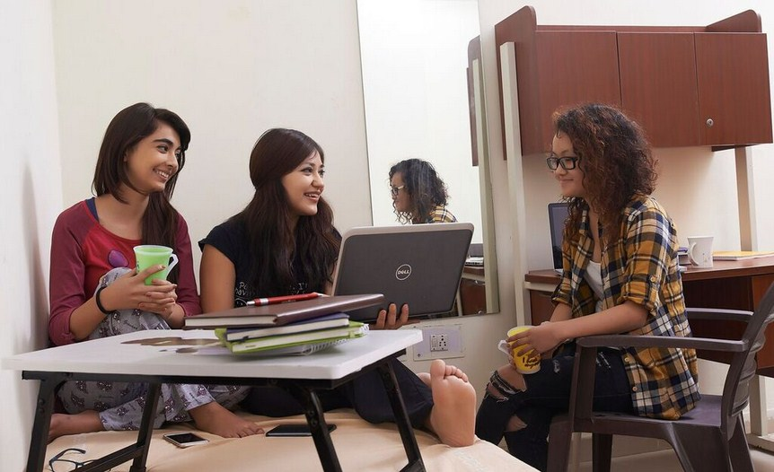
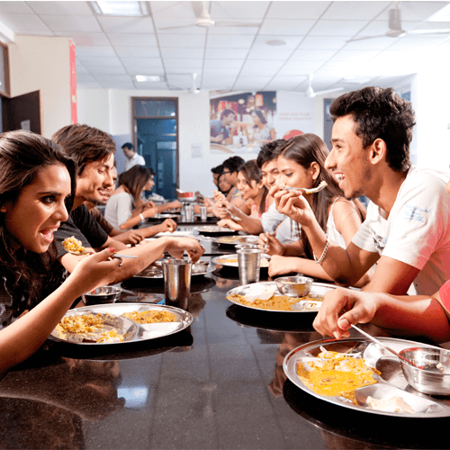

Resources & Facilities
University campus hosts a wide variety of exceptional facilities to create an environment where you can shape your future. We have various cafes and restaurants spaces for conferences and meetings, special events, and athletic competitions. We give massive importance to our facilities and learning resources and continuously ensure that our staff and students have full access to everything they need to help them succeed in their work and study. We know the value of taking a break from the stresses of academic life and relax with your friends. Safety and comfort of our staff and students are the prime concerns for us.
-

Canteen
canteen provides Fast Food preparations in University Campus , it is praised for its tasty food and is a nice joint to visit when one is looking to satiate hunger pangs with tasty, hygienic food.
-

Grocery Store
Grocery Store provides its students with all types of food staples and household products within the campus. The grocery store is well stocked with fresh groceries, and other household products to ensure uninterrupted supply.
-

Survivalence & campus Entrance System
Surveillance & Campus Entrance System is intended to ensure the safety and security of the students, staff and visitors. Entire campus including hostels, residential areas, parking, and the academic areas are secured by 24*7 operating CCTV cameras.
-

Wifi enabled campus
The campus is integrated with Learning Management System to facilitate students to discuss academic topics, submit their assignments online, see their class notes, study through specially designed learning resources .
-
Hospital
Experienced medical practitioners work in hospital and provide quality care and treatment. The emergency vehicles at the university are intended for the benefit of the students and staff.
-

Mess
The hostel mess has a separate dining hall and a well-equipped kitchen catering to more than 3000 students. Mess serves breakfast, lunch, evening tea and dinner every day and the weekly menu is available with the mess in-charge. The food served is of high quality and meets the nutritional quality standards.